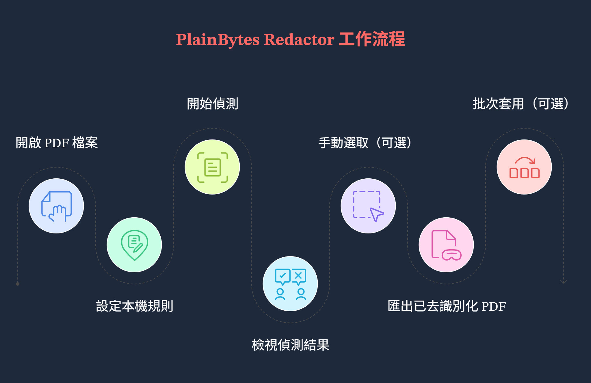
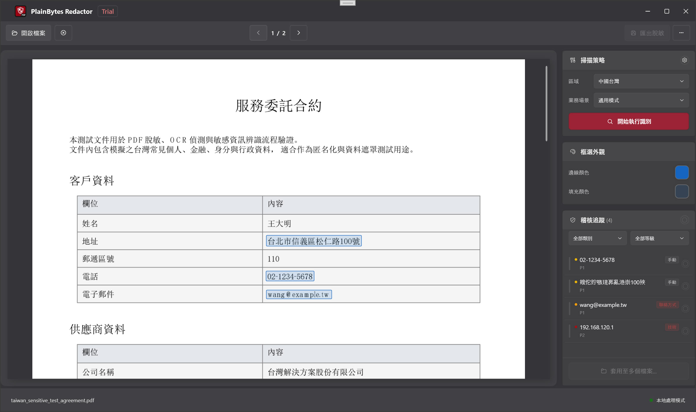

PlainBytes Redactor 使用手冊
本手冊依目前 Windows 用戶端功能撰寫；若和你安裝的版本不完全一致，請以軟體內的介面為準。
1. 產品定位
1.1 實體移除 vs 視覺遮蓋
兩者對「合規與安全」的意義完全不同，可以用下表理解：
比較項目 視覺遮蓋（常見的「塗黑」預覽） 實體移除（本應用目標）
底層 PDF
文字、向量或影像物件仍可能留在檔案裡，只是被圖形蓋住。
在內容流中刪除 對應字元/物件，讓敏感資訊無法透過標準解析路徑還原。
複製 / 搜尋
有些文件仍可能複製到被「蓋住」的文字（取決於實作方式）。
目標是移除後，可複製文字中不再出現原本的敏感內容（以實際匯出結果為準）。
適用情境
閱讀展示、臨時遮擋。
對外分享、歸檔、受稽核、盡職調查等需要不可逆抹除 的情境。
PlainBytes Redactor 的設計目標是實體移除敏感內容 ；匯出前，請透過「確認」明確指定哪些地區要真正刪除。
1.2 「本機離線」代表什麼
處理都在本機完成 ：開啟 PDF、規則比對、可選的本機 AI 推論、遮蔽寫入與驗證，都是在目前這台電腦上執行。應用程式不會把文件中傳到雲端 ：作為產品的安全邊界，遮蔽流程不會主動把你的檔案送到網路上。與系統行為的差別 ：當你主動使用「使用說明」「檢查更新」等選單時，連結會由系統預設瀏覽器或 Microsoft Store 開啟；這和「遮蔽處理流程離線」是兩件獨立的事。
1.3 適合哪些情境
法律、金融、醫療、政府機關、稽核等需要留下複核紀錄 ，並盡量降低外洩面 的工作流程。
需要對外提供 PDF 副本，但必須移除身分證號、帳號、聯絡方式等可辨識資訊 。
版面高度一致的 PDF，可先在單一檔案中確認，再透過套用到多個檔案 ，對多份副本執行同一幾何基準 的批次遮蔽（見第 3 節步驟 G、第 9 節）。
2. 核心概念
2.1 什麼是遮蔽標記（RedactionMark）
在軟體內部，每一處待遮蔽區域都會對應一筆遮蔽標記 ，可以理解成「頁面上的一個矩形框 + 中繼資料」，主要包含：
頁碼與矩形範圍 ：在 PDF 頁面座標系中的位置與大小。狀態 ：待確認 與已確認 ，只有已確認 的標記會參與匯出時的實體刪除。來源 ：規則（正規表示式/模式） 、AI 或手動框選 ，用來區分是自動命中，還是人工補上的。類別與風險等級 ：方便在稽核側欄篩選、排序與批次操作。
2.2 什麼是「確認」？為什麼需要人工確認
自動結果不等於最後決定 ：規則與 AI 都可能產生誤判 （把正常內容標成敏感）或漏判 （沒有命中），因此軟體預設不會假設「所有自動命中的內容都應該刪除」。確認 = 你已經複核並同意處理該區域 ：標記為已確認後，匯出時會把該區域納入實體移除集合；未確認的項目不會當成最終遮蔽範圍。合規與可追溯 ：人工確認環節對應實際業務中的「雙人複核」「留痕」習慣，可避免一鍵誤刪整頁或誤刪非敏感段落。
2.3 規則引擎 vs AI 辨識
比較項目 規則引擎 AI 辨識（本機模型）
依據
內建或自訂模式（如關鍵字、正規表示式），與地區、業務情境設定相關。
基於本機 ONNX 模型的語意/實體類偵測；多語能力會受到訓練資料影響。
可預期性
模式明確時行為穩定、易稽核說明。
對版面與語境比較有彈性，但遇到邊界情況仍需要人工多看幾眼。
典型用途
證件號、電話、電子郵件等格式明確的欄位。
敘述性文字中的姓名、地址、機構等「非固定格式」資訊。
實際掃描中二者常同時參與 ；最終在稽核側欄統一以「標記」形式呈現，由你決定是否確認。
2.4 「批次基準」是什麼
當你在單一檔案中完成確認後，透過套用到多個檔案 進入批次對話框時，程式會把目前文件中每一個已確認標記 換算成相對頁面寬高的標準化矩形 （頁碼 + 相對座標），僅用於本次批次會話 。
對佇列裡的每一份 目標 PDF，批次引擎只按這些矩形去套用遮蔽 ，不會 對每份檔案重新執行一遍規則掃描或 AI 全文件辨識。
什麼時候适合用 ：多份 PDF 的版面、頁碼與敏感塊位置 與目前這份「樣板」基本一致（例如同一套系統匯出的對帳單）。版面不一致時，套用可能錯頁、錯位，需抽樣檢查。規則中心裡的規則 ：用來在目前單一檔案 上找出命中並供你確認；它們不會 在批次佇列的每個檔案上自動再跑一輪——批次階段依賴的是你已確認下來的位置基準 。
3. 完整工作流程
範例背景
法務同事收到一份 8 頁的員工離職交接 PDF ，需要對外提供副本，但必須移除手機號碼、銀行卡號片段、個人電子郵件 等資訊。這份文件是可以選取文字的電子 PDF（不是純掃描圖）。

工作流程概覽
步驟 A：開啟文件
透過「開啟檔案」或拖曳匯入，載入這份 PDF（也支援常見圖片格式，但處理路徑可能不同）。
步骤 B：在規則中心選擇地區與業務情境
開啟「本機規則中心」，選擇國家/地區等地區 ，再選業務情境 （如通用、金融等），必要時啟用/關閉部分內建規則或新增自訂規則。
步驟 C：開始辨識
在主畫面右側「掃描策略」相關區域點選開始辨識 （或同等按鈕），等待構建文件模型與全文件掃描完成。
步骤 D：在稽核側欄複核
在右側稽核追蹤 清單中逐條或按篩選查看；對確需抹除的項目確認 ，對誤報取消確認 或從清單移除（按介面實際能力操作）。預覽區的黃色區域可與清單聯動，點選可切換確認狀態。
步驟 E：手動框選補漏
在左側預覽上拖曳矩形，覆蓋規則/AI 沒有命中但你知道必須去掉的內容；必要時調整「選區外觀」顏色以便辨認。最後一道安全網 。
步驟 F：匯出
點選「匯出已遮蔽」，選擇儲存路徑；閱讀完成摘要（實體移除條數、中繼資料清理、驗證提示等）。
步骤 G（可選）：套用到多個檔案
同事在本 PDF 上把所有該遮蔽的區域都確認 無誤後，在稽核側欄使用套用到多個檔案 （或同等入口）。軟體會據此產生上述標準化幾何基準 並開啟批次遮蔽 視窗；接著把多份版面一致 的 PDF 加入佇列、指定輸出資料夾，勾選是否清理中繼資料，再執行批次。直接實體刪除對應矩形範圍 。重要限制 ：這不是「儲存規則範本下次再選」——不會另外儲存範本檔 ；基準來自目前這一份 已確認文件。且批次不會 對佇列中每個檔案重新跑規則/AI，若某份檔案版面變了，應回到單一檔案流程重新辨識與確認。
4. 主畫面說明

主畫面概覽
4.1 左側預覽區
用途 ：按頁渲染 PDF（或圖片），真實反映頁碼與版面。與標記的關係 ：自動或手動產生的待遮蔽區域會以高亮框等形式叠加；點選 某區域常可與「確認/取消確認」聯動（以黃色提示與介面為準）。手動框選 ：在預覽上按下拖曳即可新增矩形標記。
4.2 右側「掃描策略」面板
用途 ：展示與目前文件相關的辨識策略入口（如開始辨識 ），並與規則中心裡設定的地區、情境、規則集相對應。為什麼單獨一塊 ：把「何時觸發全文件掃描」與「稽核清單裡怎麼改標記」在資訊架構上分開，避免混淆。
4.3 右側「框選外觀」面板
用途 ：調整手動/選區相關顯示效果，例如外框顏色、填滿顏色、自訂顏色 ，在複雜背景上仍看清待確認框。注意 ：這是介面輔助 ，不改變遮蔽是否發生；是否匯出遮蔽仍由「確認」與匯出動作決定。
4.4 右側「稽核追蹤」面板
用途 ：列出目前文件中聚合後的敏感項，支援按類別、風險等級篩選，以及對單條或批次執行確認/取消等操作。與預覽如何聯動 ：選取或操作清單項時，預覽通常捲動/高亮到對應頁與區域；在預覽點選標記也會反映到清單中的確認狀態。
4.5 工具列各按鈕（自上而下邏輯）
開啟檔案 ：選擇本機 PDF 或支援的圖片。關閉文件 ：關閉目前文件。上一頁 / 下一頁 ：在文件頁面之間切換，請使用工具列按鈕。本機規則 ：開啟規則中心，設定地區、情境、內建規則與自訂規則。批次 ：進入批次遮蔽控制台。匯出已遮蔽 ：在存在已確認標記時匯出 PDF。更多選項（⋯） ：語言、使用說明、意見回饋與支援、檢查更新、關於等。
狀態欄會顯示就緒狀態、目前檔名以及本機 AI 引擎是否就緒等摘要資訊。
5. 本機規則中心
5.1 地區與業務情境的關係
地區 ：偏向國家/地區維度，影響「哪些內建規則适用」（如當地證件、電話格式）。業務情境 ：在相同地區下进一步收缩或強調規則集（通用、金融、醫療、法律政務等），使預設開啟的規則更贴近文件類型。二者關係 ：先定地區，再選情境；組合變化後建議重新執行辨識 ，否則清單仍可能是舊策略下的結果。
5.2 內建規則 vs 自訂規則
內建規則 ：随產品提供，按類別分組（身分、金融、地址、聯絡方式等），可單獨開關，數據來自本機設定，可完全離線使用。自訂規則 ：由你定義顯示名稱與比對模式；支援一般子字串 （不分大小寫）或 .NET 正規表示式 。适合內部代號、專案專用格式等內建未覆蓋的情況。自訂規則數量可能有上限。
5.3 什麼時候需要調整規則
某類文件誤報很多 ：可暂時關閉高風險或過於寬泛的內建規則，或改選更貼切的業務情境。
反覆出現固定格式 但內建未覆蓋：新增自訂規則，減少手動框選量。誤調亂了設定 ：使用「恢復預設」清空本機覆蓋（操作前有確認）。
6. 稽核側欄詳解
6.1 確認機制的設計邏輯
清單中的每一項往往對應「同一敏感類型或同一聚合鍵」在多頁多次出現，你對項目執行確認，相當於認可這些出現均應被實體刪除 。
待確認 狀態用來區隔「機器推測」與「人工決定」；避免未複核即整批寫入。匯出引擎只使用已確認 集合，這是產品與合規預期對齊的關鍵設計。
6.2 篩選與批次確認怎麼用
篩選 ：按類別、風險等級缩小清單，優先處理高風險或某一類欄位（如僅看「聯絡方式」）。批次 ：對目前篩選下可見項目一次切換確認狀態（具體按鈕文案以介面為準），适合「這一批都是真的敏感資訊」或「這一批都是誤判」的情境。建議 ：批次操作前先確認篩選條件，避免把未看见的項目一併誤處理。
6.3 風險等級代表什麼
風險等級（如嚴重、高、可疑、中、低）用來排序與篩選優先順序 ，幫助你先處理最可能造成洩露的命中；它不自動等同於「必須確認」——最終仍由你決定是否遮蔽。
7. 手動框選
7.1 什麼情況下需要手動框選
規則與 AI 都沒有命中 ，但你從業務上知道必須去掉的內容（如手寫批註照片、特殊排版中的欄位）。
命中分散 或邊界不準 ：可刪除不準的自動項目後，用手動框精確覆蓋。
純掃描件 若以圖片形式處理：可選取文字的 PDF 與純圖片路徑不同，圖片類往往更依賴框選或專門流程（見常見問題）。
7.2 如何搭配自動偵測結果
推薦順序：先跑自動辨識 → 稽核側欄批次消化明顯誤報/漏報趨勢 → 少量用手動框補關鍵漏網之魚 → 最後全頁快速掃一眼預覽 。手動標記與自動標記在匯出前統一以「是否已確認」為準。
7.3 鍵盤快速鍵
單一檔案頁在載入時向主視窗 註冊 PreviewKeyDown。僅在已開啟文件 且應用程式不忙碌 時，下列按鍵會被該處理邏輯響應（與工具列「上一頁 / 下一頁」沒有直接綁定）。
按鍵 作用
Tab選取下一個遮蔽標記。 Shift + Tab選取上一個遮蔽標記。 ← ↑ → ↓當未按 任何修飾鍵時：←↑ 為上一標記，→↓ 為下一標記。當已按 任一修飾鍵時：僅 ↑↓ 會按固定步長垂直捲動預覽；←→ 不在此處理程式中響應。 Enter僅當未按 修飾鍵時：切換目前選取標記的確認狀態。 Delete僅當未按 修飾鍵時：刪除目前選取的標記。 Page Up / Page Down垂直捲動預覽區（步長由目前預覽檢視區高度決定）。 Home / End預覽區捲動到頂端 / 底部。
8. 匯出
8.1 匯出前檢查清單
目前文件是否為最終要對外 的版本（頁碼、附件頁無誤）。
稽核側欄中，所有應刪除項均已確認 ；明確不應刪的已取消確認或移除。
已用預覽檢查關鍵頁面，手動補框是否已覆蓋掃描件或特殊區域。
知悉匯出將寫入新檔案 （或你選擇的儲存路徑），來源檔預設不被本流程覆蓋（以實際另存行為為準）。
8.2 清理中繼資料的必要性
PDF 除了正文外，常會帶有作者、建立程式、修改時間、XMP 等中繼資料 。如果只抹除正文卻保留中繼資料，仍可能洩露內部帳號或編輯軌跡。本應用在匯出（以及批次處理的可選選項）中支援清理這類資訊；對外分享時，建議預設開啟清理 （若介面提供勾選）。
8.3 如何閱讀完成摘要
確認已實體移除的敏感項數量 是否與預期量級一致。
確認中繼資料已清理 的說明是否出現。
若存在文字驗證警告 ：表示自動抽樣比對發現疑點，需要人工開啟匯出的 PDF 做抽查，不可只靠摘要就斷言「絕對無殘留」。
9. 批次處理
9.1 批次處理實際做了什麼
從套用到多個檔案 進入並携帶基準後，對每個佇列中的 PDF，程式調用僅按基準套用 的路徑：把標準化矩形換算成該檔案各頁上的絕對座標，生成待遮蔽標記並執行實體刪除與（可選）中繼資料清理。不會對每個檔案再執行規則掃描或 AI 辨識。
因此：單一檔案裡用來「找字」的規則與 AI，只服務於你在樣板檔案上的確認結果；批次只是把「你已確認的位置」複製到多份幾何結構相同的文件中。
9.2 適合的使用情境
同一系統、同一版面匯出的多份 PDF，敏感區域在頁面上的相對位置固定 。
已在一份樣板 上完整跑過辨識、人工確認，並希望其他副本省略重複確認 。
9.3 注意事項
沒有持久化範本 ：關閉批次視窗後，本次基準不當作「命名範本」留在磁碟上；下次批次需從新的樣板檔案再次執行套用到多個檔案 。若從工具列單獨開啟批次 而未先經過上述入口，可能沒有有效基準，開始 按鈕可能無法使用（以介面為準）。
版面略有差異就會導致漏刪或誤刪地區，首批結果務必抽樣開啟檢查 。
建議勾選清除檔案內容與隱藏資料 （若提供），方便對外分享。
該功能對文件類型與授權版本 可能有限制（如部分柵格 PDF），以套用到多個檔案 是否可點選為準。
10. 常見問題
10.1 為什麼偵測結果會有誤判？
規則與 AI 都採用啟發式或統計模型：看起來像敏感資訊 的字串、地名重疊、表格中的數字片段都可能被標出。透過調整情境/規則、關閉某條規則、或在側欄取消確認即可控制；設計上故意要求人工確認 以降低一鍵誤刪風險。
10.2 掃描件要怎麼處理？
若 PDF 實為整頁點陣圖、無法抽取可選取文字，則規則/AI 能發揮的空間會受限，往往更依賴手動框選 或產品內針對柵格文件的處理路徑（以開啟檔案時的實際行為與提示為準）。處理前可先確認來源檔是否為「真正的電子 PDF」還是「掃描件」。
10.3 可以直接開啟圖片做遮蔽嗎？為什麼不會自動辨識圖片裡的文字？
可以。本應用支援開啟常見圖片檔 作為待遮蔽文件，流程上仍以預覽 + 標記 + 匯出為主。考量安裝包大小 與本機效能 ，目前版本未整合 OCR（光學字元辨識） ：圖片中的文字不會自動轉成可選取文字，因此規則掃描與本機 AI 文字辨識基本不適用 ，敏感區域需要你透過手動框選 （以及用鍵盤在標記間切換、確認）完成。
10.4 匯出後如何驗證遮蔽是否完整？
在 PDF 閱讀器中嘗試複製全文 、搜尋 已知敏感關鍵字。
對關鍵頁做目視檢查 （尤其頁眉頁尾、小字註解）。
參考軟體提供的匯出驗證摘要 ；若有警告，優先針對警告頁複查。
對極高風險情境，可搭配貴單位既有流程（二次工具抽檢、抽樣列印審閱等）。